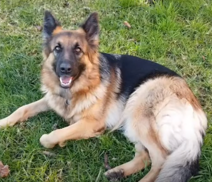

There are nearly 360 and counting dogs breed in the whole world,out of which only 6 dogs breed are found in india .These dogs bread are mainly the local dogs that are found in their respective environments. Dogs have around 27 milion population in india .These are those dogs that we normally find in our streets.These four legs creatures are normally known for there loyalty.Here are all the 6 breeds of dogs found in india-
- 

MOST COMMON INDIAN DOG
The indian pariah dog is one of the famous dog breed in india. They have many names like Desi Kutta, Neri Kutta etc.They have errect ears,a wedge-shaped head, and a curved tail. It is easily trainable and often used as a gaurd dogs.These dogs are very flexible and are very friendly. This dog is an example of an ancient group of dog known as pye-dogs.There is archaeological evidence that the dog was present in Indian villages as early as 4,500 years ago.
Appearance
It is a medium-sized dog of square to slightly rectangular buil d and short coat. The dog has a double coat, a coarse upper coat, and a soft under coat. The most commonly observed colours are browns, ranging from dark to reddish-brown, with or without white markings. Solid blacks are rare, but some dogs are pied. Shaded coats, br indles, solid white and dalmatian-type spotting are never seen in pure populations. These may be a sig n of mixing with modern breeds, as they are only seen in dogs in cities and other sites where non-native do gs have been introduced.[15] The head is medium-sized and wedge-shaped. The muzzle is pointed and is of equal or slightly greater length than the head. The neck is noble and the forequarters are erect. Hindquarters are mi nimally angled. The trot is short. The eyes are almond-shaped and dark brown in colour. The ears are held erect and are pointed at the tips, with a broad base, set low on the head, and the tail is curled and held high when excited.
lifestyle
These dogs dont need a very luxary lifestyle,and any certain temperature.They can eat any f ood items like roti,rice,fish,and nearly everything .These dogs can bear extreme hot summer,cold winters in india.These dogs are very strong and are known for their care for their masters.
For more information use the link below-SHAMEFUL TRUTH
After all the advantages of the streets dogs they are often ignored and are left in the india n streets.These dogs are often hated,stones are thrown at them,and if by chance the dog bite's a human being for its own self defence then it might be beaten till death. Although people of india like to adopt dogs but those dogs are breed dogs,these breed dogs are those dogs who are produced by some people for the purpouse of selling only. These dogs are forced to have sex and given various injections for the same. Only thier parent s dont get pain,these dogs are often very weak and are affected by the diseases very easily.Some researcher have found that these dogs have very high chance to get affected by CANCER.
ANIMAL HELPLINE NO-98201 22602